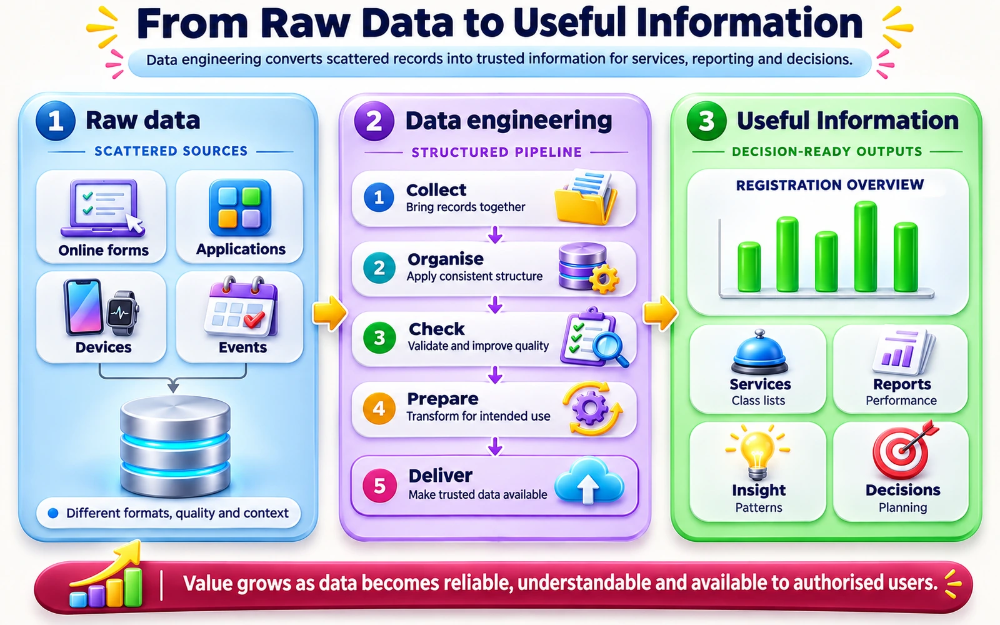

From the discipline to the ecosystem
Topic 03 introduced data engineering as a discipline. Topic 05 places that discipline inside real organisations—with people, purposes and relationships.

Remember from Topic 03
- Definition: data engineering develops, implements and maintains systems and processes that turn raw data into high-quality, consistent information for downstream use. Review ↗
- Position: data engineering sits upstream of data science and analytics. Review ↗
- Lifecycle: generation, storage, ingestion, transformation and serving, supported by six undercurrents. Review ↗
What Topic 05 adds
Purpose
Why organisations invest in data engineering.
Ecosystem
How producers, processes, people and users connect.
People and maturity
Who does what, and how needs change as an organisation matures with data.
Real cases
Data ecosystems in Malaysian organisations.
?
Think about it: If a university has thousands of student records but cannot find the correct information when needed, does it truly have useful data?